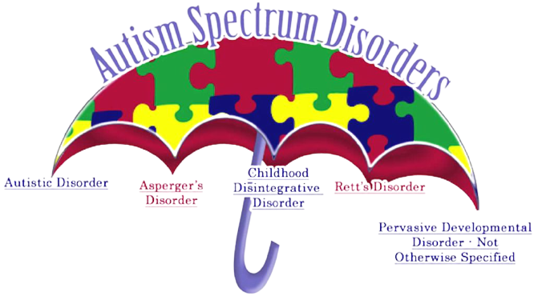

Learning Through Technology
Today technology can be a conduit used to reach the incredibly gifted minds of neurologically diverse children through relatable and dynamic mediums. Zeppelynn Application's goal is to develop software and programs that can take advantage of this conduit and help facilitate fundamental development. Whether it is to aid in the development of communication skills for neuro-diverse toddlers through early intervention applications and games or developing social-awareness skills for grade school children. Zeppelynn Applications hopes to provide a neurologically diverse framework of applications and tools to help families and children in their everyday life and exceed expectations and break through social barriers. All applications and tools are open-source and completely free for anyone and everyone. Please visit our Github page for additional information and support. Please submit
Github

Autism Spectrum Disorder
Many children with communication issues are fully capable of communicating relatively complex ideas in sentences. The reason for the issue, instead stems from a delayed ability to verbalize those ideas. Fortunately, a touch screen is a much easier way to communicate for kids that have issues verbalizing. That’s because it’s simpler to touch and tap a screen than type out everything they need to say.
Digital technology can help children with autism talk to others through text-to-voice applications text messages or email, which allows them to make their needs known faster and more clearly. The result? A more adaptable and motivated youngster!
The more that kids with autism use communication technology, the more likely they are to succeed at school and in the community. The empirical evidence suggests that the average child diagnosed with autism are more at ease communicating with an inanimate device
Sensory Processing Disorder
SPD is a neurological disorder which affects sensory information as it is processed in the brain which can result in inappropriate responses. SPD can affect all sensory systems and lead to undesirable sensations and even severe discomfort. Zeppelynn applications hopes to assist individuals with SPD by supporting and developing mobile applications designed to help sooth and relax in hopes of managing some of the discomfort that individuals with SPD can experience on a daily bases.
Github